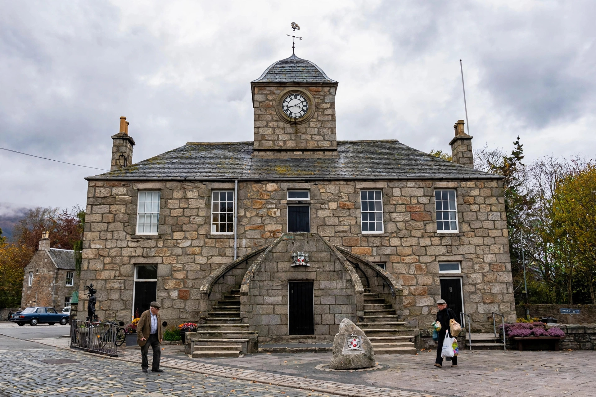

| Population | c. 4,800 |
|---|---|
| OS grid reference | NJ7916 |
| Council area | Aberdeenshire |
| Country | Scotland |
| Postcode district | AB51 |
| Dialling code | 01467 |
Kintore (Scottish Gaelic: Ceann Tòrr) is a town and former royal burgh in Aberdeenshire, Scotland, situated on the banks of the River Don near Inverurie, about 13 miles (21 km) north-west of Aberdeen. The town lies close to the A96 Aberdeen–Inverness road and has grown considerably as a commuter settlement for Aberdeen, particularly in connection with the North Sea oil and gas industry.
The area around Kintore has been inhabited since prehistoric times, and a Roman marching camp is known at Deers Den nearby, associated with the campaigns of Agricola in the first century AD. Kintore received its charter as a royal burgh from King James IV around 1506–1507, and it remained a small market town serving the surrounding agricultural district for several centuries. The Bruce family of Kintore was associated with the Earldom of Kintore, a title created in 1677 for Sir John Keith, younger brother of the Earl Marischal.
The Kintore Town House, an imposing building in the town square with a distinctive stair and steeple, was built in the 1740s and remains a focal point of the town. The ruined Hallforest Castle, a tower house to the south of the town, dates from the 14th century and was a hunting seat used by Robert the Bruce.
Kintore railway station, on the Aberdeen–Inverness line, closed in 1964 during the Beeching cuts but reopened in October 2020 following the upgrading of the line, with a new two-platform station and a large park-and-ride car park. It was one of the first new stations to open in Scotland under the Scottish Government's station investment programme of that period.
The town is served by Kintore Primary School and by Kemnay Academy in the nearby village of Kemnay for secondary education. Local facilities include a library, community centre and a number of sports clubs, including Kintore United football club.
See also: Aberdeenshire · Inverurie · Kemnay